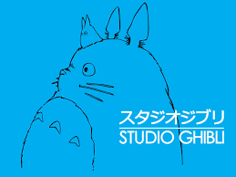

Studio Ghibli
Studio Ghibli Inc. (Japanese: 株式会社スタジオジブリ, Hepburn: Kabushiki-gaisha Sutajio Jiburi)[1] is a Japanese animation film studio headquartered in Koganei, Tokyo.[2] It is best known for its animated feature films, and has also produced several short subjects, television commercials, and two television films. Its mascot and most recognizable symbol is a character named Totoro, a giant catlike spirit from the 1988 anime film My Neighbor Totoro. Among the studio's highest-grossing films are Spirited Away (2001), Howl's Moving Castle (2004) and Ponyo (2008).[3] The studio was founded on June 15, 1985, by directors Hayao Miyazaki and Isao Takahata and producer Toshio Suzuki, after the successful performance of Topcraft's Nausicaä of the Valley of the Wind (1984).
